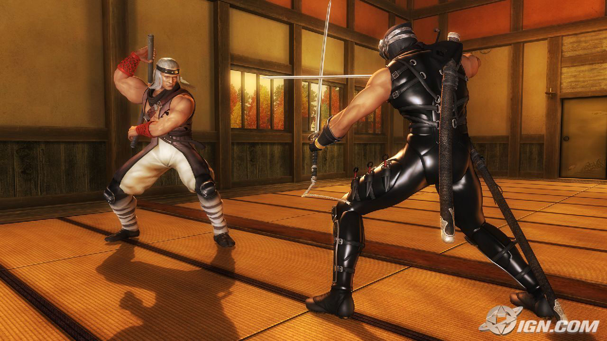
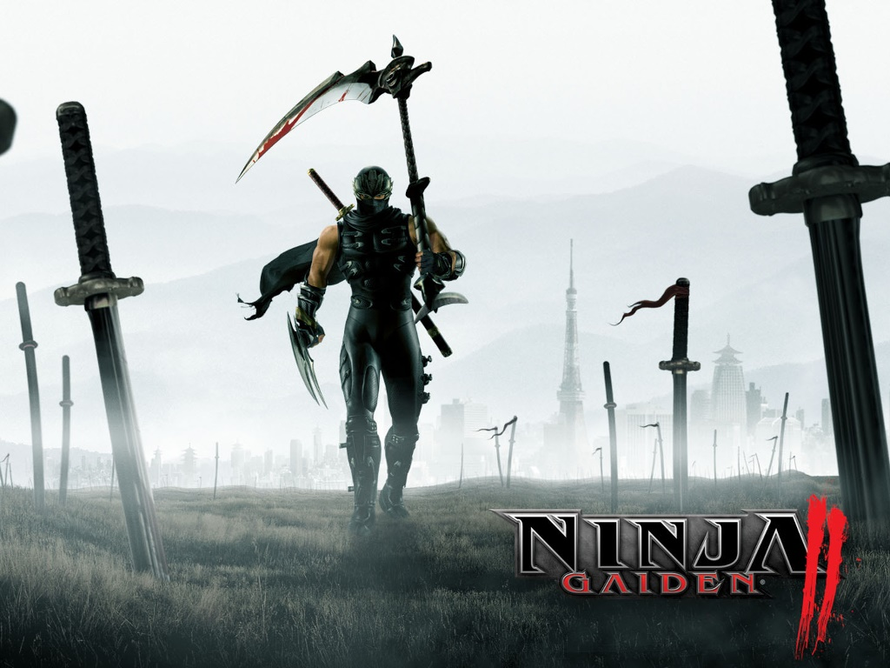
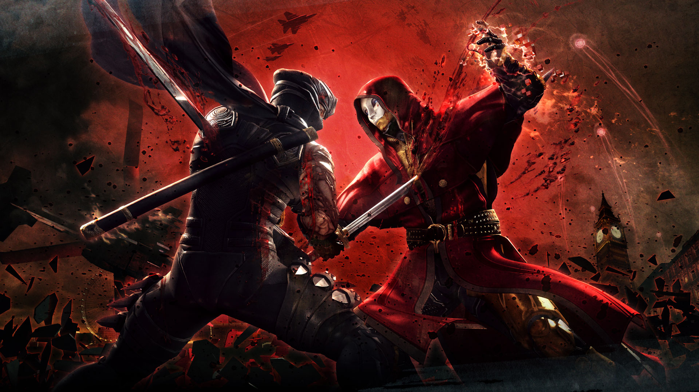

Verhaal

deel 1:
Ninja Gaiden ' verhaal s beslaat 16 hoofdstukken, die elk begin en eindigend met een filmpje . Aan het begin van het spel, de speler neemt de controle van Ryu als hij infiltreert het Shadow clan vesting. Ryu is er om zijn oom, de clan leider bezoeken Murai . Tijdens hun gesprek, Ayane levert nieuws van een overval op de Hayabusa dorp. Vechten zijn weg terug naar zijn dorp, Ryu ontmoetingen Doku, die de Hayabusa heeft gedood heiligdom meisje Kureha en heeft de Dark Dragon Blade genomen. Ryu wordt gekapt door Doku met de gestolen Blade, maar hij is weer tot leven gebracht als een "soldaat van wraak" door een valk, de geestelijke dier van de Hayabusa-clan.
Op zoek naar wraak voor de dood van Kureha's, Ryu leert van Murai dat de overvallers waren uit Vigoor, dus hij opgeborgen op een luchtschip op weg naar het rijk. [24] Het vechten zich een weg door de straten van de hoofdstad, Tairon, Ryu gezichten verschillende bazen waaronder de drie Greater Fiends. Hij verslaat Alma in een strijd die de stad wrakken, maar laat haar om genade Rachel's. Omgekeerd, Rachel kan zich er niet toe brengen om haar zus te doden, [31] en in plaats daarvan wordt genomen door Doku, die zich voorbereidt op haar te offeren in een ritueel om de macht Alma's te verbeteren. Met de hulp van Alma's redt Ryu Rachel en vernietigt Doku geest, maar met zijn laatste adem Doku werpt het bloed vloek op Ryu. [32] De enige manier voor Ryu om de vloek op te heffen is om de keizer te doden, zodat hij stormen het paleis, het verslaan van Marbus die staven zijn weg naar persoonlijk domein van de keizer. Twee opeenvolgende boss fights moeten worden ingevuld om de keizer te vernietigen en het vrijmaken van de Dark Dragon Blade-zodra dit wordt bereikt zijn rijk begint te vernietigen. Ryu moet dan worden gemanoeuvreerd een serie richels te ontsnappen, maar in het proces verliest hij zijn greep op de Dark Dragon Blade.
De gevallen Blade landt op de voeten van een figuur, de Dark Disciple, die al shadowing Ryu tijdens het spel. Het nemen van de Blade, de discipel openbaart zich aan de clan leider Murai zijn. Hij geeft toe dat de aanval op Hayabusa dorp was onderdeel van zijn plan om de kwade macht van de Blade te herstellen met behulp van de zielen van Ryu geoogst. [33] [34] Op basis van de Blade, Murai transformeert zichzelf, het instellen van het podium voor de eindbaas gevecht. Ryu verslaat Murai en verbrijzelt de Blade met de Ware Dragon Sword. Victorious, Ryu verandert zichzelf in een valk en vliegt naar de Hayabusa dorp. In de laatste scène van het spel plaatst hij de Dragon Eye, gebruikt om zijn zwaard verbeteren, op de grafsteen Kureha en verdwijnt in de nacht. Het verhaal van Ninja Gaiden wordt voortgezet in de sequels Ninja Gaiden: Dragon Sword , Ninja Gaiden II en Ninja Gaiden 3 .

deel 2:
Een jaar na de gebeurtenissen van de eerste Ninja Gaiden spel, in het rijk der duisternis, Ashtar, de kwade heer die Jaquio gecontroleerd, wordt geïnformeerd over Jaquio nederlaag; Hij bedenkt een plan op aarde te regeren door het openen van de Poort van de Duisternis. [5] A US Army Special Intelligence unit lid noemde Robert T. Sturgeon wordt verzonden naar Ryu vinden tot het afsluiten van Ashtar. [6] Robert informeert Ryu dat Irene Lew heeft gevangen genomen en dat hij moet naar de Tower of Lahja om haar te redden. [7] Na hoppen op een goederentrein en dan vechten de berg waar de toren ligt, wordt hij overvallen door een figuur die zichzelf omschrijft als een stamlid van de World of Chaos, onder leiding van de keizer van de Duisternis Ashtar. [8] Na het maken van het naar de top van de toren, Ryu vindt Irene, die is gevangen genomen door Ashtar. Ashtar ontploffing dan Ryu met energie uit zijn eigen zwaard; voordat Ashtar kunnen afmaken Ryu, Robert verschijnt en schiet Ashtar in de rug, hem te stoppen. Robert beveelt Ashtar te overhandigen zijn zwaard en op te geven, maar Ashtar ontsnapt met Irene, Ryu vertellen om hem te volgen in de doolhof van de duisternis. [9]
Na Ashtar ontsnapt in de doolhof van de duisternis, Robert vertelt Ryu over plot Ashtar's over de wereld over te nemen door het gebruik van de volledige kracht van zijn zwaard, de Dark Sword of Chaos. Robert smeekt Ryu aan Ashtar stoppen voordat zijn Dark Sword volle kracht bereikt. [10] Na het vechten door het doolhof van de duisternis en in de World of Chaos, Ryu hoort echo's van het plan van Ashtar in de verte. [11] Ryu vangt vervolgens met Ashtar . Hij brengt Irene, maar onmiddellijk na haar vrijgeven hij steekt haar met de Dark Sword. Robert toont dan omhoog, alleen om te ontdekken dat Irene is dodelijk gewond; Ashtar ontploffing toen Robert met energie uit zijn Dark Sword en dan daagt Ryu ten strijde. [12] Ryu verslaat Ashtar, en voordat hij sterft, zegt hij dat de krachten van de duisternis spoedig zal ontwaken en smeekt de krachten van de Chaos om de wereld te overspoelen in duisternis. [13] Terwijl hij dit zei, de Dark Sword of Chaos verdwijnt in het niets. Na de dood van Ashtar's, Irene vertelt Ryu dat een kwaad altaar, dat Ashtar bereid zijn om de Poort van de Duisternis te openen moeten worden vernietigd. [14] Ryu laat dan Irene achter en vertelt Robert om haar te nemen en laat de World of Chaos. [15]
Zoals Ryu komt in de wereld van de duisternis naar het altaar, Irene en Robert vernietigen, tijdje terug reizen, worden tegengehouden door een schimmige figuur die Irene eerder heeft gezien. Ondertussen, na het verslaan van Kelbeross wie hij merkte hij vocht in zijn strijd tegen Jaquio (in de vorige Ninja Gaiden spel), Ryu vindt Robert op de grond en dodelijk gewond. Hij vertelt Ryu dat Irene is weer gevangen genomen en dat hij de Poort van de Duisternis van de opening moet voorkomen. Robert vertelt dan Ryu om hem achter te laten terwijl hij wapent zich tegen de demonen. [16] Ryu maakt het uiteindelijk om het kwaad altaar waar hij Irene en de schimmige figuur die haar gevangen vindt; de figuur toont zich als Jaquio - de antagonist van de eerste Ninja Gaiden aflevering -. die was herboren na zijn eerste gevecht met Ryu [17]
Jaquio vertelt Ryu zijn masterplan van het gebruik van Ashtar als een pion, die wordt gebruikt om de ware kwaad ontwaken. Hij is van plan om de Dark Sword of Chaos gebruiken om Irene's levenskracht te gebruiken om de Poort van de Duisternis te openen en roepen alle demonen, terwijl Ryu ontwaakt ze uit hun slaap. [18] Jaquio daagt dan Ryu tot een confrontatie waarin Ryu verslaat hem . Voordat Ryu en Irene het kwaad altaar wel kan vernietigen, Jaquio bloed wekt de Dark Sword, die opent de poort van de Duisternis, schokt Irene en Ryu met zijn energie. The Demon Jashin komt door de Poort van de Duisternis en reanimeert het lijk van Jaquio. Hij draait dan in een demonische muur, die Ryu, na het lenen van de kracht van zijn Dragon Sword, verslaat. Jashin is weer weg verzegeld, de Dark Sword breekt vervolgens uit elkaar, de Poort van de Duisternis wordt gesloten en verdwijnt, en Ryu vlucht met Irene uit de tempel net zoals het instort. Hij begint dan te rouwen voor Irene, die wordt verondersteld dood te zijn, wanneer de stroom van de Dragon Sword haar herleeft. Irene vertelt Ryu dat ze voelde alsof ze had gedroomd voor een lange tijd. [19] Ryu vertelt haar dat het incident voorbij is, en het spel eindigt als de twee de zon zien ondergaan.

deel 3:
De plot begint wanneer Ryu zij door de Japanse Self-Defense Force om te gaan met een terroristische groep onder leiding van de mysterieuze alchemist, de Regent van het masker, die persoonlijk wilde dat de Dragon Ninja te komen. Na de ontmoeting met de alchemist in Londen , vloekt hij Ryu's rechterarm met de greep van Murder, die gedijt op alle levens Ryu heeft genomen, waardoor de Dragon Sword te worden opgenomen in Ryu's arm. Na het ontsnappen huis van de minister-president toen het werd verwoest door een inkomende raketten, Ryu terug naar de JSDF Yunagi. Daar, hij en JSDF lid Mizuki McCloud kijken als de Regent eist de onmiddellijke inlevering door de naties van de wereld in zeven dagen, of het gezicht vernietiging.
Na de Yunagi een signaal afkomstig van de slim Rub 'al Khali woestijn, Ryu vertrekt daar met Mizuki en wordt bezocht door Ayane , die levert aan Ryu van de Tenshin clan gekoesterd Jinran-Maru zwaard, op Hayate's verzoek. Vechten verleden huurmoordenaars en de woestijn moordenaars, Ryu maakt zijn weg naar een toren in de woestijn, waar hij voldoet aan de Regent van het masker weer. De Regent onthult hem dat de ellende van de Grip van Murder gebruikt de Dragon Sword als een medium voor de vloek, toen brak de structuur naar beneden en transmutatie het in Ryu's arm, en laat zien dat zonder behandeling, zal de vloek zijn arm rotten uit de binnenstebuiten en verspreid over zijn lichaam, hem te doden. Ryu aanvallen maar ontdekt dat de Regent is een fata morgana, en vecht een gewapende helikopter. Ryu terug naar de Yunagi, waar hij ontmoet Mizuki's dochter Canna en Cliff Higgins, Mizuki's broer-in-law. Cliff blijkt dat de groep ze vochten de heren van Alchemy (LOA) worden genoemd. Ryu vertrekt naar Abismo Island.
Op het eiland Ryu legt afval naar alle moordenaars gezonden om hem te doden, al die tijd het afweren van de effecten van de vloek. Binnenkort zou Ryu de Regent opnieuw het gezicht, en verslaat de kloon van een Gigantosaurus gemaakt door hem. Echter, Ryu ontdekt dat Mizuki is gevangen genomen. Om haar te redden, Hayabusa veinst overgave en in een verrassing verplaatsen, doodt de bewakers die haar, alleen voor Mizuki om hem bewusteloos met een verdovingsgeweer te kloppen.
Ryu ontwaakt in een VR-simulator, waar hij voldoet aan de verleidelijke en sinistere Lovelace. Ze toont aan dat in de simulator kan hij worden gekwetst of gedood, en Ryu wordt gedwongen om door te gaan met de simulatie, die hem naar plaatsen uit zijn verleden, van de luchtballon tot Vigoor, de Sky City in Tokyo, op de residentie van de minister-president , waar hij vierkante met een virtuele Regent van het masker. Na het ontsnappen, Ryu vecht zich een weg door de LOA bewakers. Uiteindelijk vindt hij Canna en ontsnapt met haar naar haar moeder te vinden. Ze vinden Mizuki, gevangen gehouden door de Regent. Na de reünie, de Regent duwt meedogenloos Lovelace in een prototype van Gods Egg, en Ryu wordt gedwongen om een gemuteerde versie van Lovelace bestrijden. Na het verslaan van haar gewijzigde vorm, Ryu ontsnapt met Canna en Mizuki, alleen te worden gearresteerd door het Amerikaanse leger. De twee worden berispt door Captain Heinlern voor hun daden en worden bevolen om hun werking onmiddellijk te staken. Ryu reist via de helikopter terug naar Hayabusa Village om uit te vinden hoe om de vloek te verwijderen.
Ten eerste, Ryu herhalingsbezoeken Genshin's graf, waar hij het blad van de Archfiend geplaatst aan het eind van Ninja Gaiden II . Hij neemt het mes en reist terug naar Hayabusa Village, de strijd tegen hordes wraakzuchtige Black Spider Ninja tot de greep van Murder begint zijn tol te eisen op hem, waardoor hij het bewustzijn verliezen. Hij wekt in de woning van de clan leider, verpleegd aan de gezondheid bij de Dragon Shrine Maiden, Momiji . Ryu en Momiji reizen naar de hermitage waar zijn vader Joe Hayabusa woont. Onderweg worden ze aangevallen door de Black Spider Ninja evenals de Black Spider Clan tovenares Obaba , die een of andere manier kwam weer tot leven. Na de slag, ze maken hun weg naar Joe's huis. Joe vertelt Ryu dat de vloek is karmische vergelding voor de daden begaan door de Dragon Ninja Clan over de generaties. Ryu hoofden dan terug naar de Yunagi.
Op de Yunagi, is Ryu gestuurd op een operatie om Antarctica met Cliff vragen dat hij back-Ryu moet zijn. Na het verslaan van talrijke vijanden er waaronder een kwade versie van zelf noemde de Epigonos, de greep van Murder begint te activeren. Cliff ontpopt zich als lid van de LOA, samen met zijn grootvader Ashtear Higgins, de voorzitter van de LOA. Ashtear blijkt dat Cliff is het hoofd van de LOA's R n 'D en dat hij heeft plannen voor Canna. Al snel na, Ryu probeert te jagen Cliff en Ashtear, maar wordt achtergelaten als hij wordt gestoten hun jet. Cliff vertelt Ryu dat hij hem zou voldoen aan de Zwarte Narwal, een mysterieuze vloot dacht te zijn ontmanteld. Ryu wordt opgepikt door Ken Ishigami uit de JSDF en vervoerd naar een VN-schip, waar hij wordt verteld dat Canna ontbreekt.
Ryu en Mizuki vliegen over de Zwarte Narwal en Ryu springt af en gaat te nemen van de escort schepen voor de landing op het belangrijkste schip zelf. Er hij geconfronteerd met Ashtear en verslaat hem. Ryu leert van zijn plannen voor Canna net voor hem te doden, en gaat op zoek naar haar in het schip. Uiteindelijk zou hij komt oog in oog te staan met de Regent van het masker, kijken als Canna is gefuseerd met het ei van een God. Ryu verslaat het Regent en is geschokt om te zien dat de man eigenlijk Canna's vader, Theodore Higgins, die werd verondersteld dood te zijn. Cliff verschijnt en bleek dat hij zijn broer gedood toen hij probeerde om zijn plan te stoppen, maar voor het doel van hem te sterven op Ryu's hand, bracht hij hem terug uit de dood, en gewist zijn herinneringen, terwijl hem het besturen door middel van een AI-eenheid in de masker. Canna ziet dit en roept Ryu een moordenaar, samen te voegen met het ei aan de godin te worden, hanteren de Dragon Sword als de Zwarte Narwal zinkt in de oceaan.
Ryu, Mizuki en Ishigami streven naar de Godin naar Tokyo , waar ze een spoor van vernieling. Ryu en Mizuki worden aangevallen door Cliff, die is omgetoverd tot een mutant schepsel. Ryu en Mizuki staat op het punt om te worden gedood toen Theodore verschijnt en doodt Cliff, zijn herinneringen volledig gerestaureerd. Ryu en Theodore zetten hun streven naar de Godin, maar toen ze op het punt om haar te bereiken, Theodore verraadt plotseling Ryu, waarin staat dat de Blade van de Archfiend Ryu gebruikt zal Canna lukraak doden, zoals het zal een boze mes. De twee mannen strijden voor de laatste keer. Na Ryu doodt hem met het mes van de Archfiend, Theodore zingt een bezwering en de vloek op Ryu wordt verwijderd. Ryu beseft dat Theodore wil sterven als verzoening.
Ryu confronteert de Godin. Zoals de strijd zijn climax bereikt, het blad van de Archfiend en de Godin 'giant Dragon Sword zijn gebroken hun gevesten. Ryu's originele Dragon Sword keert terug naar hem en hij snijdt de Godin in de helft, te doden. Canna valt in de armen van Ryu's, veilig en levendig. Ryu laat haar in een veilige omgeving voor Mizuki om haar te vinden. Met zijn plicht compleet, vertrekt hij naar de zonsopgang.